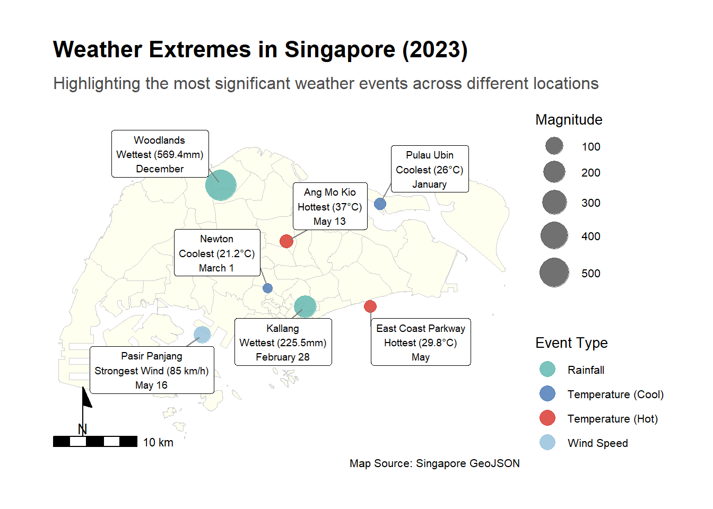

# Load the dataset
file_path <- "full_year_weather_data.xlsx"
weather_data <- read_excel(file_path)Weather Extremes in Singapore 2023
Introduction
This report analyzes the weather extremes in Singapore for the year 2023, highlighting significant weather conditions across different regions.
The code below requires the following packages:
# Add the year to the date entries and convert to datetime format
weather_data <- weather_data %>%
mutate(Date = as.Date(paste(Date, "2023"), format = "%d %b %Y"))
# Convert Daily Rainfall Total to numeric, forcing non-numeric values to NA
weather_data <- weather_data %>%
mutate(`Daily Rainfall Total (mm)` = as.numeric(`Daily Rainfall Total (mm)`))Warning: There was 1 warning in `mutate()`.
ℹ In argument: `Daily Rainfall Total (mm) = as.numeric(`Daily Rainfall Total
(mm)`)`.
Caused by warning:
! NAs introduced by coercion# Remove rows with NA values in the Daily Rainfall Total column
weather_data <- weather_data %>%
filter(!is.na(`Daily Rainfall Total (mm)`))# View the cleaned data
head(weather_data)# A tibble: 6 × 12
Location Month Date Daily Rainfall Total (mm…¹ Highest 30-min Rainf…²
<chr> <chr> <date> <dbl> <chr>
1 Admiralty January 2023-01-01 0 0.0
2 Admiralty January 2023-01-02 0 0.0
3 Admiralty January 2023-01-03 0.2 0.2
4 Admiralty January 2023-01-04 0 0.0
5 Admiralty January 2023-01-05 3.4 3.2
6 Admiralty January 2023-01-06 0.4 0.2
# ℹ abbreviated names: ¹`Daily Rainfall Total (mm)`,
# ²`Highest 30-min Rainfall (mm)`
# ℹ 7 more variables: `Highest 60-min Rainfall (mm)` <chr>,
# `Highest 120-min Rainfall (mm)` <chr>, `Mean Temperature (°C)` <chr>,
# `Maximum Temperature (°C)` <chr>, `Minimum Temperature (°C)` <chr>,
# `Mean Wind Speed (km/h)` <chr>, `Max Wind Speed (km/h)` <chr># Extract key data points
hottest_day <- weather_data %>%
filter(`Mean Temperature (°C)` == max(`Mean Temperature (°C)`, na.rm = TRUE))
coolest_day <- weather_data %>%
filter(`Mean Temperature (°C)` == min(`Mean Temperature (°C)`, na.rm = TRUE))
wettest_month <- weather_data %>%
group_by(month = format(Date, "%Y-%m")) %>%
summarise(total_rainfall = sum(`Daily Rainfall Total (mm)`, na.rm = TRUE)) %>%
filter(total_rainfall == max(total_rainfall, na.rm = TRUE))
driest_month <- weather_data %>%
group_by(month = format(Date, "%Y-%m")) %>%
summarise(total_rainfall = sum(`Daily Rainfall Total (mm)`, na.rm = TRUE)) %>%
filter(total_rainfall == min(total_rainfall, na.rm = TRUE))
strongest_wind_gust <- weather_data %>%
filter(`Max Wind Speed (km/h)` == max(`Max Wind Speed (km/h)`, na.rm = TRUE))
# Display the extracted data points
list(hottest_day, coolest_day, wettest_month, driest_month, strongest_wind_gust)[[1]]
# A tibble: 1 × 12
Location Month Date `Daily Rainfall Total (mm)` Highest 30-min Rainf…¹
<chr> <chr> <date> <dbl> <chr>
1 Ang Mo Kio May 2023-05-13 0 0.0
# ℹ abbreviated name: ¹`Highest 30-min Rainfall (mm)`
# ℹ 7 more variables: `Highest 60-min Rainfall (mm)` <chr>,
# `Highest 120-min Rainfall (mm)` <chr>, `Mean Temperature (°C)` <chr>,
# `Maximum Temperature (°C)` <chr>, `Minimum Temperature (°C)` <chr>,
# `Mean Wind Speed (km/h)` <chr>, `Max Wind Speed (km/h)` <chr>
[[2]]
# A tibble: 10,213 × 12
Location Month Date Daily Rainfall Total…¹ Highest 30-min Rainf…²
<chr> <chr> <date> <dbl> <chr>
1 Admiralty Octo… 2023-10-07 0 0.0
2 Ang Mo Kio June 2023-06-16 0.4 0.2
3 Ang Mo Kio June 2023-06-19 0.2 -
4 Botanic Garden Janu… 2023-01-01 0 0.0
5 Botanic Garden Janu… 2023-01-02 0.2 0.2
6 Botanic Garden Janu… 2023-01-03 7.4 7.0
7 Botanic Garden Janu… 2023-01-04 0 0.0
8 Botanic Garden Janu… 2023-01-05 41.2 17.4
9 Botanic Garden Janu… 2023-01-06 0 0.0
10 Botanic Garden Janu… 2023-01-07 0 0.0
# ℹ 10,203 more rows
# ℹ abbreviated names: ¹`Daily Rainfall Total (mm)`,
# ²`Highest 30-min Rainfall (mm)`
# ℹ 7 more variables: `Highest 60-min Rainfall (mm)` <chr>,
# `Highest 120-min Rainfall (mm)` <chr>, `Mean Temperature (°C)` <chr>,
# `Maximum Temperature (°C)` <chr>, `Minimum Temperature (°C)` <chr>,
# `Mean Wind Speed (km/h)` <chr>, `Max Wind Speed (km/h)` <chr>
[[3]]
# A tibble: 1 × 2
month total_rainfall
<chr> <dbl>
1 2023-12 17352.
[[4]]
# A tibble: 1 × 2
month total_rainfall
<chr> <dbl>
1 2023-08 5724.
[[5]]
# A tibble: 1 × 12
Location Month Date Daily Rainfall Total (…¹ Highest 30-min Rainf…²
<chr> <chr> <date> <dbl> <chr>
1 Pasir Panjang May 2023-05-16 15.4 11.0
# ℹ abbreviated names: ¹`Daily Rainfall Total (mm)`,
# ²`Highest 30-min Rainfall (mm)`
# ℹ 7 more variables: `Highest 60-min Rainfall (mm)` <chr>,
# `Highest 120-min Rainfall (mm)` <chr>, `Mean Temperature (°C)` <chr>,
# `Maximum Temperature (°C)` <chr>, `Minimum Temperature (°C)` <chr>,
# `Mean Wind Speed (km/h)` <chr>, `Max Wind Speed (km/h)` <chr># Define location coordinates and events data
location_coords <- data.frame(
Location = c("Woodlands", "Ang Mo Kio", "Pulau Ubin", "Pasir Panjang", "Newton", "Kallang", "East Coast Parkway"),
Longitude = c(103.78, 103.85, 103.95, 103.76, 103.83, 103.87, 103.94),
Latitude = c(1.43, 1.37, 1.41, 1.27, 1.32, 1.30, 1.30)
)
events_data <- tibble(
Location = c("Woodlands", "Ang Mo Kio", "Pulau Ubin", "Pasir Panjang", "Newton", "Kallang", "East Coast Parkway"),
Event = c(
"Wettest (569.4mm)", "Hottest (37°C)", "Coolest (26°C)",
"Strongest Wind (85 km/h)", "Coolest (21.2°C)", "Wettest (225.5mm)",
"Hottest (29.8°C)"
),
Date = c("December", "May 13", "January", "May 16", "March 1", "February 28", "May"),
Type = c("Rainfall", "Temperature (Hot)", "Temperature (Cool)", "Wind Speed", "Temperature (Cool)", "Rainfall", "Temperature (Hot)"),
Magnitude = c(569.4, 37, 26, 85, 21.2, 225.5, 29.8),
icon = c(
"icons/rainfall_icon.png",
"icons/sun_icon.png",
"icons/cool_temperature_icon.png",
"icons/wind_icon.png",
"icons/cool_temperature_icon.png",
"icons/rainfall_icon.png",
"icons/sun_icon.png"
)
)
location_coords <- location_coords %>%
left_join(events_data, by = "Location")
# Custom color palette
event_colors <- c(
"Rainfall" = "#5ab4ac",
"Temperature (Cool)" = "#4575b4",
"Temperature (Hot)" = "#d73027",
"Wind Speed" = "#91bfdb"
)
# Read the GeoJSON file
singapore_map <- geojson_sf("sg.geojson")
# Create the plot
ggplot() +
# Base map
geom_sf(data = singapore_map, fill = "ivory", color = "gray80", size = 0.2) +
# Events
geom_point(
data = location_coords,
aes(x = Longitude, y = Latitude, color = Type, size = Magnitude),
alpha = 0.8
) +
# Labels
geom_label_repel(
data = location_coords,
aes(
x = Longitude, y = Latitude,
label = paste0(Location, "\n", Event, "\n", Date)
),
size = 2.5, box.padding = 0.5, point.padding = 0.3,
segment.color = "grey50", force = 10, max.overlaps = Inf,
fill = "white", color = "black"
) +
# Color and size scales
scale_fill_manual(values = event_colors, name = "Event Type") +
scale_fill_fermenter(palette = "Blues", name = "Population Count", breaks = seq(0, 500000, by = 50000), labels = scales::comma, direction = 1) +
scale_color_manual(values = event_colors, name = "Event Type") +
scale_size_continuous(range = c(3, 10), name = "Magnitude") +
# Theme and labels
theme_minimal() +
labs(
title = "Weather Extremes in Singapore (2023)",
subtitle = "Highlighting the most significant weather events across different locations",
x = "Longitude",
y = "Latitude",
caption = "Map Source: Singapore GeoJSON"
) +
# Adjust theme elements
theme(
plot.title = element_text(size = 16, face = "bold", margin = margin(b = 10)),
plot.subtitle = element_text(size = 12, color = "gray30", margin = margin(b = 20)),
legend.position = "right",
legend.box = "vertical",
legend.margin = margin(t = 10, r = 0, b = 10, l = 0),
plot.margin = unit(c(1, 1, 1, 1), "cm"),
text = element_text(size = 10),
panel.grid = element_blank(),
axis.text = element_blank(),
axis.title = element_blank()
) +
# Guides
guides(
color = guide_legend(override.aes = list(size = 5)),
size = guide_legend(override.aes = list(color = "gray30"))
) +
# Add north arrow and scale bar
annotation_north_arrow(
location = "bl", which_north = "true",
pad_x = unit(0.0, "in"), pad_y = unit(0.0, "in"),
style = north_arrow_minimal
) +
annotation_scale(location = "bl", width_hint = 0.3, pad_x = unit(0.0, "in"), pad_y = unit(0.0, "in")) +
# Set coordinate limits
coord_sf(xlim = c(103.6, 104.1), ylim = c(1.15, 1.5), expand = FALSE)Scale for fill is already present.
Adding another scale for fill, which will replace the existing scale.
Population Density by Planning Area
# Load the population data from the Excel file
population_data_excel_path <- 'respopagesexfa2023e.xlsx'
population_data <- read_excel(population_data_excel_path, skip = 2)
# Display the first few rows of the dataset
head(population_data)# A tibble: 6 × 5
`Planning Area` Subzone `Age Group` `Floor Area` `2023`
<chr> <chr> <chr> <chr> <chr>
1 Total Total Total Total* 4149250
2 Total Total Total ≤ 60 273590
3 Total Total Total > 60 - 80 523800
4 Total Total Total > 80 - 100 1035820
5 Total Total Total > 100 - 120 1125500
6 Total Total Total > 120 1149000# Rename columns
population_data <- population_data %>%
rename(PA = `Planning Area`, Pop = `2023`)
# Convert Pop column to numeric, coercing any non-numeric values to NA
population_data <- population_data %>%
mutate(Pop = as.numeric(Pop))Warning: There was 1 warning in `mutate()`.
ℹ In argument: `Pop = as.numeric(Pop)`.
Caused by warning:
! NAs introduced by coercion# Display the cleaned and renamed data
head(population_data)# A tibble: 6 × 5
PA Subzone `Age Group` `Floor Area` Pop
<chr> <chr> <chr> <chr> <dbl>
1 Total Total Total Total* 4149250
2 Total Total Total ≤ 60 273590
3 Total Total Total > 60 - 80 523800
4 Total Total Total > 80 - 100 1035820
5 Total Total Total > 100 - 120 1125500
6 Total Total Total > 120 1149000# Select the first row of each distinct Planning Area, which contains the total population
population_aggregated <- population_data %>%
group_by(PA) %>%
slice(1) %>%
ungroup()
# Display the aggregated population data
head(population_aggregated)# A tibble: 6 × 5
PA Subzone `Age Group` `Floor Area` Pop
<chr> <chr> <chr> <chr> <dbl>
1 * Includes resident population withou… <NA> <NA> <NA> NA
2 Ang Mo Kio Total Total Total* 161180
3 Bedok Total Total Total* 279510
4 Bishan Total Total Total* 88120
5 Boon Lay Total Total Total* 30
6 Bukit Batok Total Total Total* 168560# Load the GeoJSON file
geojson_path <- 'sg.geojson'
singapore_map <- st_read(geojson_path)Reading layer `sg' from data source
`C:\Users\luvam\Documents\csc3107-iv-team-violetred-p3-poster-project\sg.geojson'
using driver `GeoJSON'
Simple feature collection with 55 features and 2 fields
Geometry type: MULTIPOLYGON
Dimension: XY
Bounding box: xmin: 103.6057 ymin: 1.158699 xmax: 104.0885 ymax: 1.470775
Geodetic CRS: WGS 84# Merge population data with geographical data
singapore_map <- singapore_map %>%
left_join(population_aggregated, by = c("planning_area" = "PA"))
# Plot the population density heatmap
ggplot() +
geom_sf(data = singapore_map, aes(fill = Pop), color = "gray80", size = 0.2) +
# Use viridis palette for perceptual uniformity and accessibility
scale_fill_viridis_c(option = "plasma", name = "Population Count", labels = comma) +
theme_minimal() +
labs(title = "Population Density in Singapore (2023)",
subtitle = "Aggregated by Planning Area",
x = "Longitude",
y = "Latitude",
caption = "Source: Singapore Department of Statistics") +
theme(plot.title = element_text(size = 16, face = "bold", margin = margin(b = 10)),
plot.subtitle = element_text(size = 12, color = "gray30", margin = margin(b = 20)),
legend.position = "right",
legend.box = "vertical",
legend.margin = margin(t = 10, r = 0, b = 10, l = 0),
plot.margin = unit(c(1, 1, 1, 1), "cm"),
text = element_text(size = 10),
panel.grid = element_blank(),
axis.text = element_blank(),
axis.title = element_blank())
Merging Weather Extremes Plot and Population Density Plot
# Create the combined plot
ggplot() +
# Base map for population density
geom_sf(data = singapore_map, aes(fill = Pop), color = "gray80", size = 0.2) +
# Events data
geom_point(
data = location_coords,
aes(x = Longitude, y = Latitude, color = Type, size = Magnitude),
alpha = 0.8
) +
# Labels for weather events
geom_label_repel(
data = location_coords,
aes(
x = Longitude, y = Latitude,
label = paste0(Location, "\n", Event, "\n", Date)
),
size = 2.5, box.padding = 0.5, point.padding = 0.3,
segment.color = "grey50", force = 10, max.overlaps = Inf,
fill = "white", color = "black"
) +
# Color and size scales
scale_fill_fermenter(palette = "Blues", name = "Population Count", breaks = seq(0, 500000, by = 50000), labels = scales::comma, direction = 1) +
scale_color_manual(values = event_colors, name = "Event Type") +
scale_size_continuous(name = "Magnitude") +
# Theme and labels
theme_minimal() +
labs(
title = "Weather Extremes in Singapore (2023)",
subtitle = "Combining population density with significant weather events",
x = "Longitude",
y = "Latitude",
caption = "Source: Singapore Department of Statistics and Weather Data"
) +
# Adjust theme elements
theme(
plot.title = element_text(size = 16, face = "bold", margin = margin(b = 10)),
plot.subtitle = element_text(size = 12, color = "gray30", margin = margin(b = 20)),
legend.position = "right",
legend.box = "vertical",
legend.margin = margin(t = 10, r = 0, b = 10, l = 0),
plot.margin = unit(c(1, 1, 1, 1), "cm"),
text = element_text(size = 10),
panel.grid = element_blank(),
axis.text = element_blank(),
axis.title = element_blank()
) +
# Guides for color and size
guides(
color = guide_legend(override.aes = list(size = 5)),
size = guide_legend(override.aes = list(color = "gray30"))
) +
# Add north arrow and scale bar
annotation_north_arrow(
location = "bl", which_north = "true",
pad_x = unit(0.0, "in"), pad_y = unit(0.0, "in"),
style = north_arrow_minimal
) +
annotation_scale(location = "bl", width_hint = 0.3, pad_x = unit(0.0, "in"), pad_y = unit(0.0, "in")) +
# Set coordinate limits
coord_sf(xlim = c(103.6, 104.1), ylim = c(1.15, 1.5), expand = FALSE)Adding Icons above the labels for the different weather extremes
# Add icons to the map above
ggplot() +
# Base map for population density
geom_sf(data = singapore_map, aes(fill = Pop), color = "gray80", size = 0.2) +
# Events data
geom_point(
data = location_coords,
aes(x = Longitude, y = Latitude, color = Type),
shape = 21, size = 8, alpha = 0.8
) +
# Icons for weather events
geom_image(
data = location_coords,
aes(x = Longitude, y = Latitude, image = icon),
size = 0.05, # Adjust size as needed
by = "width" # Ensures the icon sizes are consistent
) +
# Labels for weather events
geom_label_repel(
data = location_coords,
aes(
x = Longitude, y = Latitude,
label = paste0(Location, "\n", Event, "\n", Date)
),
size = 2.5, box.padding = 0.5, point.padding = 0.3,
segment.color = "grey50", force = 10, max.overlaps = Inf,
fill = "white", color = "black"
) +
# Color and size scales
scale_fill_fermenter(palette = "Blues", name = "Population Count", breaks = seq(0, 500000, by = 50000), labels = scales::comma, direction = 1) +
scale_color_manual(values = event_colors, name = "Event Type") +
scale_size_continuous(name = "Magnitude") +
# Theme and labels
theme_minimal() +
labs(
title = "Weather Extremes in Singapore (2023)",
subtitle = "Adding icons to the combined map",
x = "Longitude",
y = "Latitude",
caption = "Source: Singapore Department of Statistics and Weather Data"
) +
# Adjust theme elements
theme(
plot.title = element_text(size = 16, face = "bold", margin = margin(b = 10)),
plot.subtitle = element_text(size = 12, color = "gray30", margin = margin(b = 20)),
legend.position = "right",
legend.box = "vertical",
legend.margin = margin(t = 10, r = 0, b = 10, l = 0),
plot.margin = unit(c(1, 1, 1, 1), "cm"),
text = element_text(size = 10),
panel.grid = element_blank(),
axis.text = element_blank(),
axis.title = element_blank()
) +
# Guides for color and size
guides(
color = guide_legend(override.aes = list(size = 5)),
size = guide_legend(override.aes = list(color = "gray30"))
) +
# Add north arrow and scale bar
annotation_north_arrow(
location = "bl", which_north = "true",
pad_x = unit(0.0, "in"), pad_y = unit(0.0, "in"),
style = north_arrow_minimal
) +
annotation_scale(location = "bl", width_hint = 0.3, pad_x = unit(0.0, "in"), pad_y = unit(0.0, "in")) +
# Set coordinate limits
coord_sf(xlim = c(103.6, 104.1), ylim = c(1.15, 1.5), expand = FALSE)